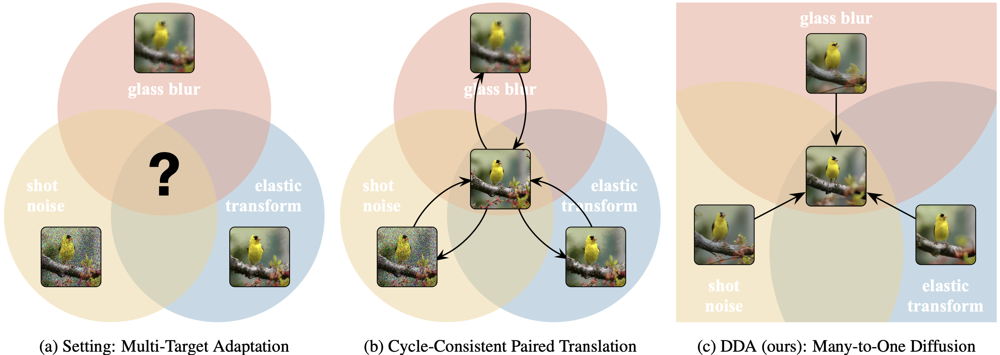

One diffusion model can adapt inputs from new and multiple targets during testing. Our adaptation method, DDA, projects inputs from all target domains to the source domain by a generative diffusion model. Having trained on the source data alone, our source diffusion model for generation and source classification model for recognition do not need any updating, and therefore scale to multiple target domains without potentially expensive and sensitive re-training optimization.
Back to the Source:
Diffusion-Driven Adaptation to Test-Time Corruption
[Paper] [Code] [Demo] [Bibtex]

Abstract: Test-time adaptation harnesses test inputs to improve the accuracy of a model trained on source data when tested on shifted target data. Most methods update the source model by (re-)training on each target domain. While re-training can help, it is sensitive to the amount and order of the data and the hyperparameters for optimization. We update the target data instead, and project all test inputs toward the source domain with a generative diffusion model. Our diffusion-driven adaptation (DDA) method shares its models for classification and generation across all domains, training both on source then freezing them for all targets, to avoid expensive domain-wise re-training. We augment diffusion with image guidance and classifier self-ensembling to automatically decide how much to adapt. Input adaptation by DDA is more robust than model adaptation across a variety of corruptions, models, and data regimes on the ImageNet-C benchmark. With its input-wise updates, DDA succeeds where model adaptation degrades on too little data (small batches), on dependent data (correlated orders), or on mixed data (multiple corruptions).